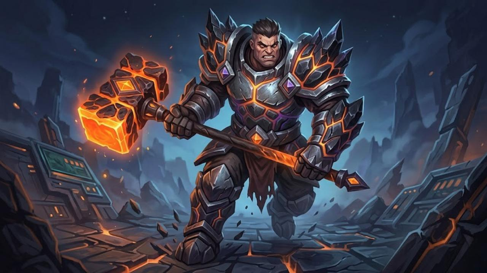

Story Of
The Glitch Blade
Commander: Cypher

Backstory:
The most mysterious troop, utilizing space technology or cosmic magic. Cypher provides them with weapons capable of "blinking" (short-distance teleportation). They often appear like flickering or "glitched" shadows.
Specialization:
High-Tech Stealth. They can infiltrate the heart of enemy defenses by phasing through walls or other dimensions.
Cypher

Backstory:
A genius technomancer from Jakarta obsessed with victory algorithms. He accidentally discovered a "glitch" in the code of reality that connected to Void energy. He harnessed this to create his weapon, the System Breaker hammer. He joined the clan because he views Clash of BaNG as the most efficient algorithm for conquering enemies.